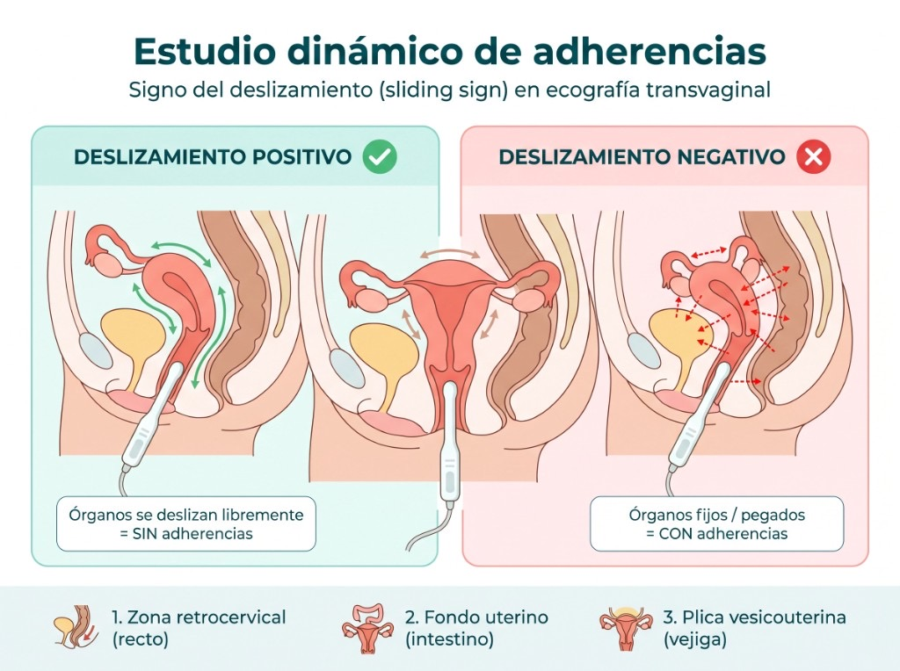

Mapeo ecográfico de endometriosis

El mapeo de endometriosis es un examen ecográfico donde se evalúa de forma sistemática no solo el útero y los ovarios (como en una ecografía transvaginal convencional), sino además las vías urinarias, el colon y los ligamentos uterinos, para descartar la forma más grave de endometriosis llamada endometriosis profunda, la cual puede afectar estos órganos.
Esta información es de suma importancia para el médico tratante: permite definir el mejor manejo, evitar tratamientos insuficientes y reducir la necesidad de repetir una intervención quirúrgica. El examen requiere preparación intestinal previa y la duración es de aproximadamente 30 a 50 minutos, con clasificación internacional ENZIAN.
Está indicado en mujeres con dolor pélvico crónico con o sin estudios previos negativos, pacientes con dolor menstrual severo e incapacitante, aquellas sin mejoría del dolor con tratamientos previos, y en pacientes con sospecha clínica o imagenológica de endometriosis profunda.
Preguntas Frecuentes
Respuestas sobre el mapeo ecográfico de endometriosis
Sirve para hacer el diagnóstico de forma no invasiva (sin cirugía) y determinar la extensión de la enfermedad. La endometriosis más avanzada puede afectar otros órganos como vejiga, uréteres, riñones, recto y colon: es lo que se denomina endometriosis profunda. Alrededor del 20% de pacientes con endometriosis pueden tener endometriosis profunda, por lo que es importante determinar la extensión para orientar mejor el tratamiento.
No es lo mismo. Una ecografía transvaginal Doppler es un procedimiento limitado a la evaluación del útero y de los ovarios. El mapeo ecográfico de endometriosis se realiza con preparación intestinal previa, se hace de forma combinada por vía transvaginal y abdominal, y evalúa además la vejiga, los uréteres, el recto y colon sigmoides, la vagina, los ligamentos uterinos y los riñones.
Normalmente es un procedimiento bien tolerable para la mayoría de las pacientes, salvo que exista una inflamación muy severa de la pelvis. Por este motivo no es aconsejable realizarlo durante los días de la menstruación.
Sí. Para realizar el mapeo ecográfico se indica una preparación intestinal 24 horas antes del estudio: dieta blanda, laxante suave la noche previa, ayuno de 4 horas el día del examen y vejiga medianamente llena. Las indicaciones detalladas se proporcionan al momento de agendar la cita. Ver preparación completa.